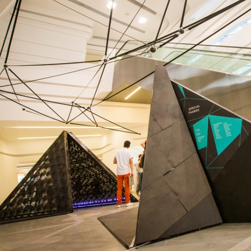
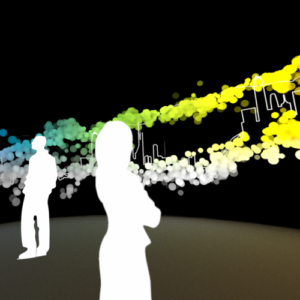
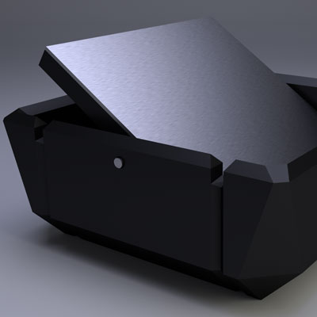

iQuestion,
an application that connects users to each other so that they will be able to exchange knowledge, as currency.
KarmaQ,
a conceptual system designed to change add value to the time spent waiting in lines by making it worth something.

Shattered Communities,
a collaborative effort with a large team to alter the way people pass through the lobby of the Jockey Club Innovation Tower -Hadid.

Auroral Spectrum,
an immersive 3D visualisation that compares the most light polluted place on earth with the least.

and The Solotouch,
an instrument combining an intuitive hardware controller with intelligent software to allow anyone play rocking guitar solos without any musical training.